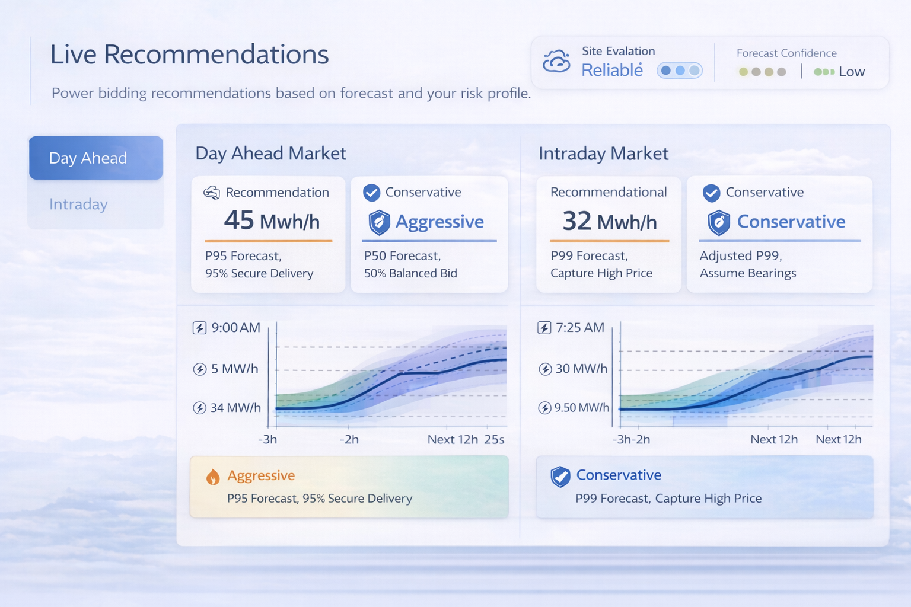

Site-specific forecasting
Numerical weather models combined with wind-farm flow simulations and ML calibration. Captures wake effects, terrain influence, and local patterns. Runs continuously with fast reforecasting as new data arrives.
AI-powered decision support for wind energy trading
WindLens combines site-specific wind power forecasts with an AI agent that monitors forecast uncertainty and market conditions — and alerts you with clear recommendations when it matters.
The agent experience
WindLens isn't a dashboard you stare at. It's an AI agent that continuously analyses incoming forecast and market data, identifies critical moments, and comes to you with context and a recommendation.
What's happening
GFS and ECMWF diverge by 8 m/s on wind speed for 14:00–18:00. Power forecast spread: 42–78 MW (your schedule: 65 MW). Historical pattern: similar divergences led to >30% forecast error in 73% of cases.
Market context
Imbalance prices elevated at €120/MWh (vs. €45 average). Intraday liquidity thinning for delivery hours 14–18. Short position risk is high.
Recommendation
Reduce day-ahead position by 15 MW for hours 14–18 and hedge remaining volume in intraday before 10:00 gate closure. Expected penalty reduction: €4,200.
Example alert from WindLens — delivered when risk conditions warrant action, not on a schedule.
Share your site layout, historical production, and market position. WindLens learns the specifics of your assets.
WindLens ingests live weather models, runs site-specific flow simulations, and tracks market signals around the clock.
When forecast uncertainty spikes, when imbalance prices are about to move, when ramp risk is high — WindLens tells you why and what to do.
Follow the recommendation, adjust it based on your judgement, or dig into the full analysis. You stay in control.
Under the hood
WindLens builds on two layers: a forecasting engine that captures your site's specific physics, and an AI agent that turns those forecasts into actionable trading intelligence.
Numerical weather models combined with wind-farm flow simulations and ML calibration. Captures wake effects, terrain influence, and local patterns. Runs continuously with fast reforecasting as new data arrives.
Tracks imbalance prices, intraday market dynamics, and settlement patterns. Identifies when price risk is elevated and explains the drivers — not just that something changed, but why.
When forecast uncertainty or market conditions cross critical thresholds, WindLens alerts you. Each alert explains the drivers — which weather model diverges, what historical patterns suggest — and recommends a position.
Product
Site-specific forecasts linked to market context and probabilistic risk profiles — delivered as alerts, not dashboards.

Site-specific wind power forecasts that capture wake effects, terrain, and local conditions. Continuously updated with fast reforecasting as new weather model runs arrive.

Monitors imbalance prices, intraday volatility, and settlement dynamics. Surfaces the drivers behind price movements so you understand what's happening and why.

When forecast uncertainty spikes or market risk shifts, the agent alerts you with the full picture: what changed, why it matters, and what position to take given your risk tolerance.
Modules
WindLens is modular. Pick the intelligence layer that matches the risk you carry.
€100/MW/yr
For customers bearing volume risk
€6,000/license/yr
For customers bearing price risk
Custom pricing
For customers who want the full picture
Who it's for
Operators, traders, and IPPs who need to know when risk is coming and what to do about it.
Plan dispatch, curtailment, and maintenance with confidence. Get alerted before ramp events and forecast uncertainty spikes hit your schedule.
Align day-ahead and intraday positions with real-time risk context. Know when imbalance exposure is rising and what's driving it before gate closure.
Optimise portfolio performance across assets and markets. Get a unified risk view that spans multiple sites and trading positions.
Founded by researchers from EPFL and MIT. Active pilots with major operators and traders.
Supported by
Get in touch
Tell us about your assets, your market exposure, and the risks you manage. We'll show you how WindLens handles them.